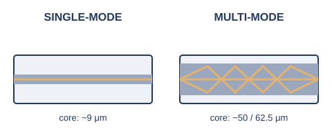

序章では、同軸ケーブルからより対線へと、電気信号を運ぶ銅線（メタルケーブル）の話を中心に見てきました。電気信号は、電圧の高い/低い、あるいは電流の有無で0と1を表現します。銅線は安価で扱いやすい反面、信号が電気である以上、周囲の電磁波（モーターや蛍光灯、他のケーブルなど）の影響を受けやすく、また距離が伸びるほど信号が減衰していく、という制約を抱えています。
これに対して、光ファイバは電気の代わりに光（レーザーやLEDによる光のパルス）で信号を送ります。光は電磁ノイズの影響を受けないため、銅線よりはるかに長い距離を安定して届けられます。ただし、光を送受信するための機器やケーブルの加工には相応のコストがかかります。
無線（電波）は、ケーブルという物理的な制約そのものから解放される伝送媒体です。設置の自由度は高い一方、電波という「空間」を複数の機器で共有することになるため、他の電波との干渉や、障害物・距離による減衰の影響を強く受けます。この後の節では、メタルケーブル（2.2）、光ファイバ（2.3）、無線LAN（2.5）について、それぞれもう少し詳しく見ていきます。
序章で見てきたより対線（RJ45で接続するケーブル）には、「カテゴリ（Cat）」という規格による格付けがあります。カテゴリの数字が大きいほど、対応する周波数帯域が広く、より高速な通信を安定して通せます。
ここで実務上とくに注意したいのが、Cat6とCat6Aの違いです。Cat6は10Gbpsの通信（10GBASE-T）にも対応してはいますが、その対応距離はケーブル配線の規格上限とされる100mよりずっと短い、55m程度に制限されます※1。オフィスのフロア配線のように、決まった長さのケーブルを壁の中に通してしまっている環境で「あとから10Gに増速したい」と思っても、Cat6配線のままでは100mの距離を確実に10Gbpsで通せる保証がありません。10Gbpsを100mの距離で確実に飛ばしたいなら、帯域を倍の500MHzに強化したCat6Aを選んでおくのが安全です。
光ファイバは、中心にある芯（コア）を光が通り抜けることで信号を伝えます。このコアの太さによって、光ファイバは大きく2種類に分かれます※2。

シングルモードファイバは、コアの直径が9マイクロメートル程度と非常に細く、光がほぼ1本の経路（モード）しか通れません。経路が1本に絞られるため、複数の経路を通った光が到着時刻のずれを起こす現象（モード分散）が起きず、非常に長い距離まで信号を届けられます。長距離の基幹回線や、通信事業者の回線などで使われます。
マルチモードファイバは、コアの直径が50マイクロメートルや62.5マイクロメートルと太く、光が複数の経路で反射しながら進みます。経路ごとに光の到着時刻がわずかにずれるモード分散が起こるため、シングルモードほど長距離には向きませんが、発光素子（LED等）が安価に作れるため、機器・ケーブルのコストを抑えられます。建物内やデータセンター内など、比較的短い距離の配線でよく使われます。
コネクタにはいくつかの種類がありますが、現在よく使われるのはLCコネクタ（SCの半分程度と小型）と、やや大きめのSCコネクタ（押し込んで固定するタイプ）です。どちらもシングルモード・マルチモードの両方に対応しています※2。
序章の終盤で、より対線が1対を送信専用・1対を受信専用に使い分けることで全二重が実現した、という話をしました。ただし、接続する2台の機器が「本当に同じ速度・同じ全二重で通信してよいか」を、あらかじめ人間が設定しておく必要があるとしたら、大変面倒です。
この調整を自動で行う仕組みが、オートネゴシエーション（自動ネゴシエーション）です。IEEE 802.3規格のClause 28として定義されており、ケーブルを挿した瞬間、両端の機器がFLP（Fast Link Pulse）と呼ばれる特別な信号のやり取りを通じて、自分が対応できる速度・全二重/半二重の組み合わせを相手に伝え合います。そのうえで、双方が対応できる中で最も高性能な組み合わせを自動的に選びます※3。
10Mbps・100Mbpsの時代は、オートネゴシエーションはあくまで任意の機能で、両端を手動で固定することもできました（だからこそ、片方だけ固定してしまうデュプレックスミスマッチ事故が起きたのです）。これに対し、1Gbps以上の規格（1000BASE-Tや10GBASE-Tなど）では、そもそもオートネゴシエーションによる速度合わせが必須の仕組みとして組み込まれており、手動で固定するという選択肢自体が用意されていません。
ただし実務では、スイッチのCLI上に「速度1000Mbps・全二重」の設定コマンドが用意されていることがあり、これは根底のネゴシエーション自体を止めているのではなく、申告する候補を1つに絞り込んでいるだけです※6（ごく一部の古い機器では、これによって本当にネゴシエーションが無効化され、規格から外れた挙動になることもあります）。
無線LANの規格は、本来IEEE 802.11の後ろに付くアルファベット（802.11n、802.11acなど）で区別されていましたが、一般の利用者には分かりにくいため、業界団体のWi-Fi Allianceが「Wi-Fi 4」のような世代番号による呼び方を導入しました。この番号は802.11n以降にさかのぼって付け直されたものです※4。
ここで挙げた理論値は、いずれも実験室環境での最大値です※4。実際の通信速度は、電波の届く距離、障害物、同時に接続している端末の台数、周囲の電波干渉など、さまざまな要因で理論値より大きく下がります。世代を追うごとに理論値が伸びているのは事実ですが、「Wi-Fi 6だから必ず速い」とは限らない、という点には注意が必要です。
より対線には4対の線があり、通信規格によっては2対しか使わない、という話を序章でしました。PoEは、まさにこの「空いている2対」に直流電力を流すか、あるいはデータで使っている対に電力を重畳させる（信号と電力を同じ線に同時に乗せる）ことで、通信と同時に電力を送り届けています。電力を送り出す側（スイッチやPoE対応の電源装置）をPSE（Power Sourcing Equipment）、電力を受け取る側（IP電話や無線LANのアクセスポイント、防犯カメラなど）をPD（Powered Device）と呼びます。PoEを使えば、PDの近くにコンセントがなくても、LANケーブル1本で通信と給電を同時にまかなえます。
世代が進むほど、供給できる電力は大きくなっています※5。PSE側の供給電力とPD側の受電電力に差があるのは、ケーブルの途中で電力の一部が失われることをあらかじめ見込んだ規格になっているためです。